Single & Multi-Story Houses
Odor-free, maintenance-free treatment for family homes, with no gully bowser visits to arrange.
Get a Quote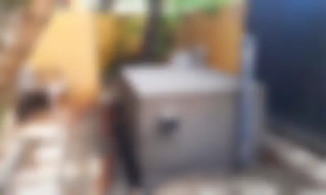
“පරවැව ක්රමය” - පරිසරය රකින වැසිකිළි වල ක්රමය
A patented Parawewa system with two options: Option A (gravity-fed, no electricity) and Option B (Seal Type Parawewa System for high water tables). No gully bowser emptying.
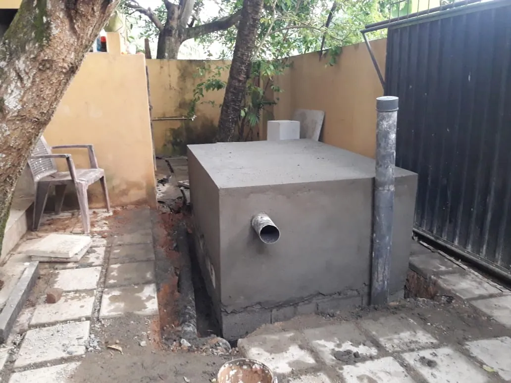
Parawewa provides two engineered models tailored for Sri Lanka's diverse soil & water table conditions.
100% Passive Flow • No Electricity • No Moving Parts
Ideal for standard inland building plots with normal soil elevation and standard ground water levels. Uses natural gravity head pressure to pass effluent through biological filter media.
Water-Sealed System • Flood-Proof
Engineered specifically for high groundwater table lands, marshy wetlands (Negombo, Wattala, Ja-Ela), coastal properties, and flat elevations where gravity discharge is impossible.
| System | Low groundwater level | High groundwater level |
|---|---|---|
| Toilet Parawewa system | Standard Parawewa system (Option A) | Water-sealed Parawewa system (Option B: Seal Type) |
| Wastewater Parawewa system | Standard Parawewa system (Option A) | Water-sealed Parawewa system (Option B: Seal Type) |
In every Parawewa system, the water is treated to a level fit for absorption and then soaks into the ground. Only the water-sealed system uses a pump, and it uses less electricity than other sewage treatment plants.
Choosing the right sanitation system is crucial for your property's longevity and environmental safety. Here is why homeowners and businesses across Sri Lanka rely on Parawewa Bio-Septic Systems.
Engineered to prevent groundwater infiltration during heavy Sri Lankan rains and to stop toxic wastewater seeping into the surrounding soil and wells.
Maintenance-free tanks, backed by an official 10-year written warranty issued directly by Parawewa.
Natural bio-filter technology: multi-stage aerobic digestion breaks down organic matter and reduces odour, so no desludging and no gully bowser are needed.
Specially weighted and reinforced concrete structures resist flotation and cracking in low-lying and flood-prone areas, with Option B, the Seal Type Parawewa System, for high water tables.
Built on site under strict quality control, with turnkey excavation, installation and backfilling by our own team, across Sri Lanka.
Illustrations of where a Parawewa chamber sits beside the building and how it is constructed before it is covered.
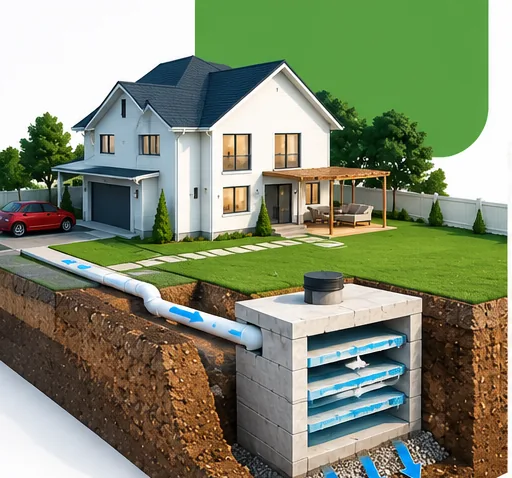
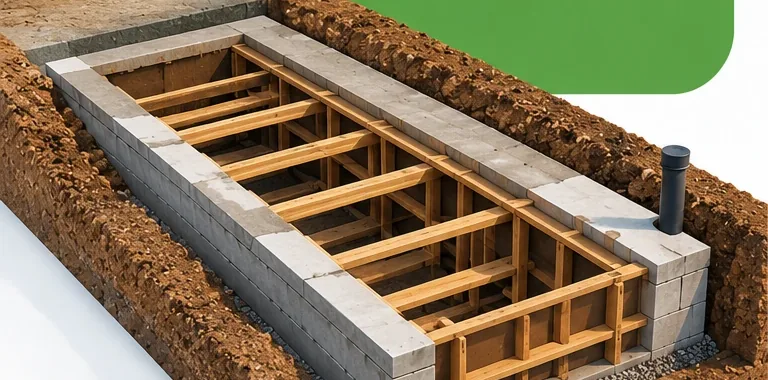
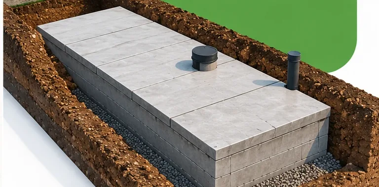
These illustrations are conceptual. Tank type, size and layout vary by site and are confirmed at your free site inspection.
Engineered to serve single residential homes up to large commercial complexes across Sri Lanka.
Odor-free, maintenance-free treatment for family homes, with no gully bowser visits to arrange.
Get a QuoteFor waterlogged and coastal land in areas such as Negombo, Ja-Ela, Wattala and Mathugama.
Get a QuoteFor offices, banks and retail outlets that need reliable, CEA-compliant wastewater treatment.
Get a QuoteOdor-free treatment near guest areas for hotels and eco-resorts in Bentota, Ella and Sigiriya.
Get a QuoteOne reliable, warranted system for every unit in a new housing scheme or apartment project.
Get a QuoteHigh-capacity treatment for factory canteens, staff quarters and busy production sites.
Get a QuoteFor schools, education centres, hospitals and government institutions with many daily users.
Get a Quote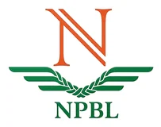
Nithya Papers & Board Lanka (Pvt) Ltd – BOI Zone, Horana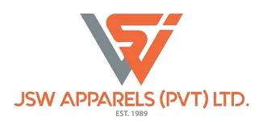
JSW Apparels (Pvt) Ltd – Panadura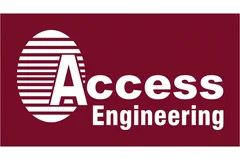
Access Engineering – Port of Colombo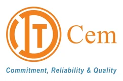
ITD Cementation India Limited – Port of Colombo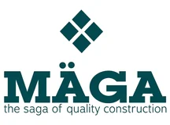
MAGA Engineering (Pvt) Ltd – KMTT Project, Ampitiya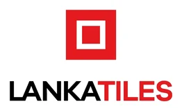
Lanka Tiles – Ranala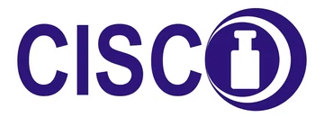
Cisco Speciality Packaging (Pvt) Ltd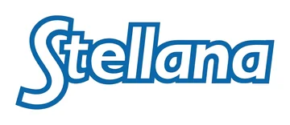
Elastomeric Engineering Co. Ltd – Horana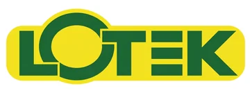
LOTEK (Pvt) Ltd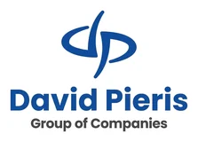
David Pieris Holdings (Pvt) Ltd – GLO Camp, WelikandaAlso trusted by
Top-rated environmental engineering articles. Tap any article to read the full guide.
 WATER SAFETY
WATER SAFETY
Learn how to detect groundwater leaks during monsoon season and how sealed Parawewa bio tanks protect your drinking water.
 COST SAVINGS
COST SAVINGS
Compare 24/7 electric air blower running costs against Option A 100% passive gravity flow and Option B: Seal Type Parawewa System.
 HIGH WATER TABLE LANDS
HIGH WATER TABLE LANDS
Step-by-step engineering guide for installing leak-proof bio septic systems in coastal and marshy soils like Ja-Ela, Mathugama and Negombo.
Watch videos about the Parawewa system, how it works and who is using it, on YouTube.
Official Sri Lanka feature showcase explaining how Parawewa biological filtration decomposes sewage without odor or emptying.
A walkthrough of the Parawewa sewage treatment system for household toilets.
The Parawewa septic tank system presented by Sri Lanka Inventors.
Compare our patented biological system (Option A & Option B) against imported mechanical STPs, existing competition, and traditional concrete pits.
| Feature / Parameter | Parawewa | Imported Mechanical STP (Aerated) | Traditional Concrete Septic Tank |
|---|---|---|---|
| System Options | Option A (Gravity) or Option B (Seal Type Parawewa System) | Single Fixed Electric Blower Unit | Standard Concrete Ring Pit |
| Electricity Required | Option A: No Electricity / Option B: low electricity use | Requires 24/7 Electric Blower (High Bills) | No Electricity |
| Power Cut Operation | Option A operates 100% during power cuts | Blower Stops; Bacteria Dies & Odor Spills | Operates (Overflow Risk) |
| Manufacturer Warranty | 10-Year Written Guarantee | Limited 1 - 3 Year Warranty | No Warranty |
| Gully Bowser Emptying | Never Required (No Gully Fees) | Periodic Sludge Purging Required | 1-2 Times Per Year (Costly) |
Also comparing an aerated package plant? Read the Parawewa vs Aerated Package Plants comparison
Verified factory, retail, and residential installations across Sri Lanka — real projects and locations, not marketing quotes.
Industrial paper manufacturing facility installed with a Parawewa system engineered for high daily wastewater volume and ongoing CEA discharge compliance — removing the need for periodic gully bowser servicing at an active production site.
A garment manufacturing plant with significant daily staff occupancy runs on a maintenance-free Parawewa installation, avoiding disruption to factory operations from recurring suction-truck visits.
A high-footfall retail supermarket outlet uses Option A's no-electricity design, avoiding the recurring blower running cost that a mechanical STP would otherwise add to daily overheads.
A multi-unit housing scheme in Parawewa's own home district was fitted with Parawewa systems, avoiding a shared gully bowser maintenance burden across every household in the development.
Pioneering sustainable environmental engineering in Sri Lanka since 1996.
At Parawewa, we are dedicated to transforming wastewater management across Sri Lanka through advanced patented engineering and eco-friendly, locally developed bio-septic technologies. Founded on the principle of delivering durable, hassle-free sanitation solutions, Parawewa replaces traditional, slow-to-build brick-and-mortar septic pits with precision-built, leak-proof in-situ cast concrete systems designed to last for generations.
Parawewa is a Sri Lanka-based leader in wastewater solutions. Our engineering combines heavy-duty concrete construction with natural, multi-stage biological treatment. Whether you are building a modern home, developing a commercial property, or upgrading existing sanitation infrastructure, our team delivers seamless end-to-end installation with minimal disruption to your land.
Invented in 1996 and protected under Sri Lanka Patent #16371, the Parawewa bio septic system won 1st Place at the 2018 Presidential Innovation Awards in Sri Lanka and a Silver Medal at iCAN 2019 in Canada.
Our units are built on site under strict quality control standards, enabling rapid site placement and setup.
Multi-stage aerobic digestion naturally breaks down waste, producing cleaner effluent and protecting Sri Lanka’s soil and groundwater.
Built to withstand high groundwater pressure, heavy monsoon conditions and soil shifts without cracking or leaking.
Engineered to prevent blockages, with no desludging and no gully bowsers needed, saving long-term maintenance costs.
Custom-sized in-situ cast units engineered for single-family homes and apartment units.
High-capacity bio-septic and holding solutions for hotels, restaurants, factories and schools.
Turnkey excavation, positioning, connection and backfilling, handled entirely by our skilled team.
Ongoing technical consultations, system health checks and routine operational support.
Our Mission: To deliver safe, reliable and environmentally friendly sanitation solutions to every Sri Lankan household and business while preserving our island's soil and natural waterways.
We take pride in offering transparent unit pricing, clear installation timelines, and dedicated after-sales support for every project we undertake.
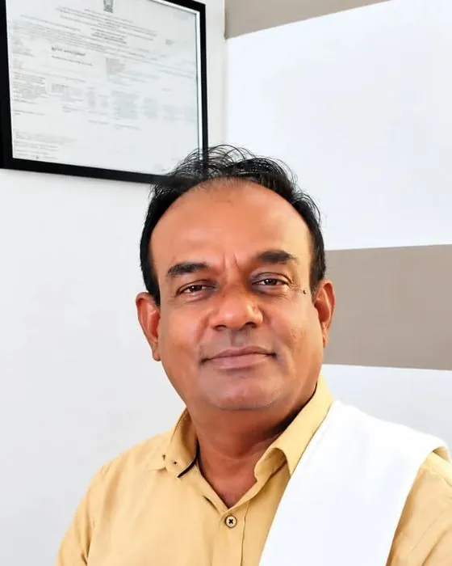
Real document photographs downloaded directly from parawawa.lk official archives.
Official Presidential innovation certificate awarded by the President of Sri Lanka.
Awarded in Toronto, Canada for international eco-technology excellence.
Original patent registration document for biological filtration.
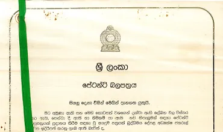
Independent laboratory test report on the treated water quality.
Select your building type and estimated number of users to see the recommended Parawewa tank capacity.
Find immediate technical answers about Parawewa eco bio septic tank systems.
Unlike imported mechanical STPs which require continuous 24/7 electricity to run air blowers and need frequent mechanical servicing, Parawewa engineered by Parawewa provides two flexible options: Option A (100% Gravity-Fed with no electricity for normal ground) and Option B (Seal Type Parawewa System for high ground water table), both featuring a 10-Year written manufacturer guarantee and no gully bowser emptying.
Option A (Gravity-Fed) operates on 100% passive natural gravity flow with no electricity, ideal for standard ground levels. Option B (Seal Type Parawewa System) is a water-sealed system designed specifically for high water table lands (such as Negombo, Ja-Ela, Wattala or Mathugama) where natural gravity discharge is restricted. It uses some electricity, but less than mechanical STPs.
Parawewa issues an official 10-Year written manufacturer guarantee certificate covering structural tank integrity, chamber sealing, and multi-stage biological layer filtration performance.
Yes! Parawewa Option B is specifically engineered for high groundwater tables, wetlands, and coastal soils (Negombo, Ja-Ela, Wattala, Mathugama, Galle). The hermetically sealed concrete body prevents inward water seepage and flood backflow.
Yes, Parawewa effluent discharge is laboratory-tested to meet all Sri Lanka Central Environmental Authority (CEA) discharge guidelines (BOD & COD limits), making it suitable for commercial buildings, hotels, and apartments.
The Parawewa bio septic system was invented in 1996 by Ranjith Dharmakeerthi Mannage, Managing Director of Parawewa in Sri Lanka. The technology holds Sri Lanka Patent #16371.
Recommended capacity depends on your property type and number of occupants. Use our interactive tank sizer above for an instant approximate estimate, then request a free site inspection from Parawewa for an exact recommendation and quote.
Both. Parawewa is installed across residential, industrial, and commercial sites islandwide — including factories, retail outlets, and housing developments — with capacity sized to each site's occupancy and wastewater load. See our real project case studies for examples.
Our expert engineering team at Parawewa led by founder Ranjith Dharmakeerthi Mannage is ready to assess your site anywhere in Sri Lanka.